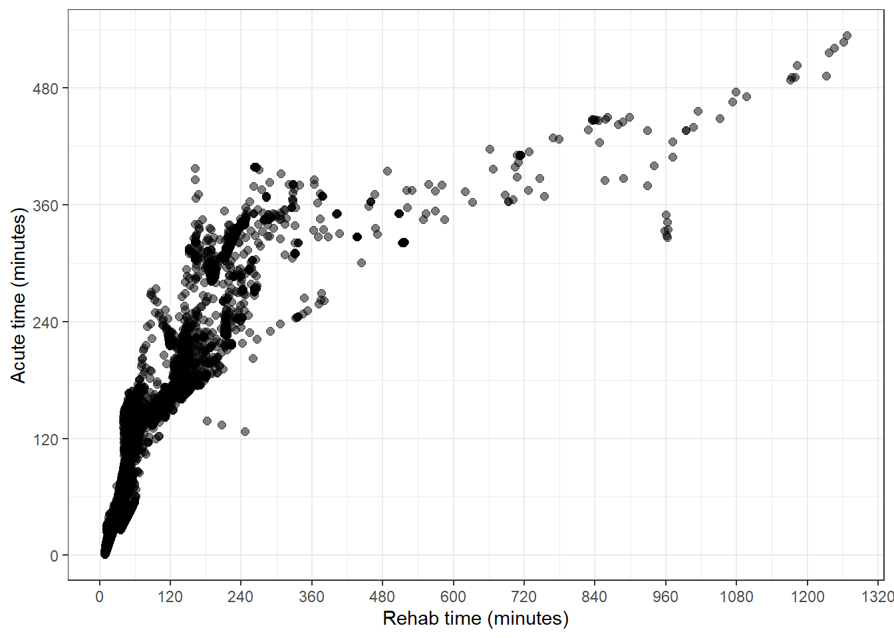
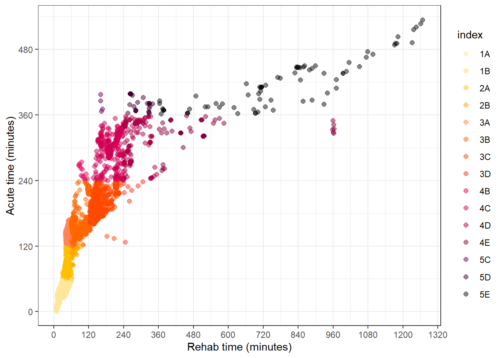

Chapter 7 Using a leaflet palette in ggplot
This chapter will cover:
- matching
ggplot2colour scales to the leaflet colour palettes with:- continuous colour scales
- binned colour scales
For these examples, we will use the polygons from iTRAQI and be manipulating the ggplot colour palettes as the app does to create the scatter plot on the main map (available when any SA1 or SA2 layer is selected).
The following chunk downloads these layers and colour palettes (just the same as in chapters 1 and (leaflet-colours) but using SA1s this time).
library(tidyverse)
library(sf)
download_layer <- function(layer_name, save_dir = "input") {
githubURL <- glue::glue("https://raw.githubusercontent.com/RWParsons/iTRAQI_app/main/input/layers/{layer_name}")
download.file(githubURL, file.path(save_dir, layer_name), method = "curl")
readRDS(file.path(save_dir, layer_name))
}
polygons_layer <- download_layer("stacked_SA1_and_SA2_polygons_year2016_simplified.rds")Before we start, we will load our polygons and palettes from the last chapter:
Here, we create the same palette we used for the leaflet map, the same way as we did in the previous chapter.
iTRAQI_acute_breaks <- c(-Inf, 1, 2, 4, 6, Inf)
iTRAQI_rehab_breaks <- c(-Inf, 1, 2, 4, 6, Inf)
get_iTRAQI_index <- function(acute_mins, rehab_mins) {
acute_cat <- cut(acute_mins / 60, breaks = iTRAQI_acute_breaks)
rehab_cat <- cut(rehab_mins / 60, breaks = iTRAQI_rehab_breaks)
acute_label <- as.numeric(acute_cat)
rehab_label <- LETTERS[rehab_cat]
index_value <- paste0(acute_label, rehab_label)
ifelse(index_value == "NANA", NA, index_value)
}
polygons_layer <- polygons_layer %>%
mutate(index = get_iTRAQI_index(value_acute, value_rehab))
qld_SA1s <- filter(polygons_layer, SA_level == 1)
qld_SA1s_df <- as.data.frame(qld_SA1s) %>%
select(CODE, value_acute, value_rehab, index) %>%
na.omit()
index_palette_url <- RCurl::getURL("https://raw.githubusercontent.com/RWParsons/iTRAQI_app/main/input/index_palette.csv")
index_palette <- read.csv(text = index_palette_url) %>%
select(Acute, Rehab, hex = hex2) %>%
cbind(., iTRAQI_bins = (na.omit(unique(polygons_layer$index)) %>% sort()))
paliTRAQI <- colorFactor(
index_palette$hex,
levels = index_palette$iTRAQI_bins,
ordered = FALSE
)7.1 Basic scatterplot with {ggplot2}
Here’s our starting point. An uncoloured scatter plot of rehab and acute travel times for each SA2 area
qld_SA1s_df %>%
ggplot(aes(value_rehab, value_acute)) +
geom_point(size = 2, alpha = 0.5) +
theme_bw() +
labs(
y = "Acute time (minutes)",
x = "Rehab time (minutes)"
) +
scale_y_continuous(breaks = seq(0, 1000, by = 120)) +
scale_x_continuous(breaks = seq(0, 1500, by = 120))
7.2 Colouring the scatterplot with the iTRAQI colours
If we add the index to the colour aesthetic, we get the desired effect in the plot, but not to the colour palette we have on the main map.
qld_SA1s_df %>%
ggplot(aes(value_rehab, value_acute, col = index)) +
geom_point(size = 2, alpha = 0.5) +
theme_bw() +
labs(
y = "Acute time (minutes)",
x = "Rehab time (minutes)"
) +
scale_y_continuous(breaks = seq(0, 1000, by = 120)) +
scale_x_continuous(breaks = seq(0, 1500, by = 120))To apply the paliTRAQI colours to the scatter plot, we use scale_colour_manual to manually assign values (hex codes) as well as specifying the limits to include all possible values.
qld_SA1s_df %>%
ggplot(aes(value_rehab, value_acute, col = index)) +
geom_point(size = 2, alpha = 0.5) +
theme_bw() +
labs(
y = "Acute time (minutes)",
x = "Rehab time (minutes)"
) +
scale_y_continuous(breaks = seq(0, 1000, by = 120)) +
scale_x_continuous(breaks = seq(0, 1500, by = 120)) +
scale_colour_manual(
values = paliTRAQI(index_palette$iTRAQI_bins),
limits = index_palette$iTRAQI_bins
)
7.3 Colouring the scatterplot with our custom-palette’s colours
First, we load the palette that we used for the leaflet map with unevenly spaced bins
bins <- c(0, 30, 60, 120, 180, 240, 300, 360, 900, 1200)
palBin <- colorBin("YlOrRd", domain = min(bins):max(bins), bins = bins, na.color = "transparent")
palNum1 <- colorNumeric(c(palBin(bins[1]), palBin(bins[2])), domain = 0:30, na.color = "transparent")
palNum2 <- colorNumeric(c(palBin(bins[2]), palBin(bins[3])), domain = 30:60, na.color = "transparent")
palNum3 <- colorNumeric(c(palBin(bins[3]), palBin(bins[4])), domain = 60:120, na.color = "transparent")
palNum4 <- colorNumeric(c(palBin(bins[4]), palBin(bins[5])), domain = 120:180, na.color = "transparent")
palNum5 <- colorNumeric(c(palBin(bins[5]), palBin(bins[6])), domain = 180:240, na.color = "transparent")
palNum6 <- colorNumeric(c(palBin(bins[6]), palBin(bins[7])), domain = 240:300, na.color = "transparent")
palNum7 <- colorNumeric(c(palBin(bins[7]), palBin(bins[8])), domain = 300:360, na.color = "transparent")
palNum8 <- colorNumeric(c(palBin(bins[8]), palBin(bins[9])), domain = 360:900, na.color = "transparent")
palNum9 <- colorNumeric(c(palBin(bins[9]), "#000000"), domain = 900:1200, na.color = "transparent")
palNumMix <- function(x) {
case_when(
x < 30 ~ palNum1(x),
x < 60 ~ palNum2(x),
x < 120 ~ palNum3(x),
x < 180 ~ palNum4(x),
x < 240 ~ palNum5(x),
x < 300 ~ palNum6(x),
x < 360 ~ palNum7(x),
x < 900 ~ palNum8(x),
x < 1200 ~ palNum9(x),
x >= 1200 ~ "#000000",
TRUE ~ "transparent"
)
}To colour the points to the palNumMix palette, we need to use scale_colour_gradientn().
The tricky bit to apply in the app here, is to be able to create the this colour scale for either the acute or rehab time. Here, I’ll declare these as arguments so the generating of the colour scale is closer to how it’s done in the app.
care_type_selected <- "value_acute"
if (care_type_selected == "value_acute") {
df_plot <-
qld_SA1s_df %>%
mutate(selected_col = value_acute)
} else if (care_type_selected == "value_rehab") {
df_plot <-
qld_SA1s_df %>%
mutate(selected_col = value_rehab)
}
minimum <- min(df_plot$selected_col, na.rm = TRUE)
maximum <- max(df_plot$selected_col, na.rm = TRUE)
col_bins <- c(minimum, bins[(bins > minimum & bins < maximum)], maximum)
df_plot %>%
ggplot(aes(value_rehab, value_acute, col = selected_col)) +
geom_point(size = 2, alpha = 0.5) +
theme_bw() +
labs(
y = "Acute time (minutes)",
x = "Rehab time (minutes)"
) +
scale_y_continuous(breaks = seq(0, 1000, by = 120)) +
scale_x_continuous(breaks = seq(0, 1500, by = 120)) +
scale_colour_gradientn(
colours = palNumMix(col_bins),
values = scales::rescale(col_bins)
)If we change the first line in the chunk above to be:
care_type_selected <- "value_rehab"The plot changes to be colour the points according to the rehab time, and using the same scale.
This is implemented in the iTRAQI app in a nifty way that allows the user’s selection of the layer to trigger both changes on the map and the associated plot. There’s also an additional feature of removing points on the plot (but actually only setting alpha=0) that are filtered out using the filters on the control panel. We also don’t bother showing the legend on the plot because this would be replicating the legend made for leaflet. How these systems interact will be described in Chapter (shiny-colours)